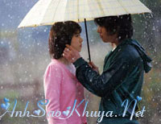

Phải rồi, mình đã chia tay !

Em mỉm cười, một nụ cười nhẹ bẫng đủ để không ai nhận ra dấu vết của nó, nhưng anh thấy, và anh hiểu ý nghĩa của nụ cười ấy.,Hay em nhỉ, dường như thời gian cho một tình yêu là quá lâu và cho một lời chia tay thật nhanh . Nhanh choáng váng đến nỗi một buổi nhìn sang bên cạnh, nhìn vào mắt em, anh hiểu, mình đã ko còn là của nhau.
Ai đó từng nói, tình yêu chỉ cần một lý do là yêu. Nhưng chia tay thì bao nhiều lý do cho đủ.
Ngày mình yêu nhau cũng thế. Anh luôn lúng túng mỗi khi em hỏi: "Vì sao anh lại yêu em ?".
Lúng túng thật sự. Không phải vì không yêu, mà vì anh không biết yêu em vì cái gì, chỉ đơn giản là từ buổi chiều hôm đầu tiên gặp nhau, anh biết mình phải yêu em. Như định mệnh vậy. Nó rơi xuống đột ngột đến nỗi anh không nhận ra. Ừ nhỉ, chiều hôm ấy.
Anh và em học cùng một trường . Ngày nào anh cũng gặp em, vì chúng ta lại học cùng dãy. Mình bắt đầu yêu nhau như thế em nhỉ, bình thường như bao cặp đôi khác, như bao tình yêu khác. Nhớ buổi hẹn đầu tiên, anh hồi hộp đến nỗi phải lôi thằng bạn thân theo, nó cứ cằn nhằn suốt thôi. Em cũng dẫn theo nhỏ bạn.
Buổi tối ấy em nói liến thoắng, em sôi nổi mà không hề ngại ngùng như những cô gái anh gặp trước đây, thẹn thùng một cách giả tạo. Em không thế, em tự nhiên như thể chúng ta đã quen nhau lâu rồi vậy. Anh yêu cái khoảnh khắc ấy biết nhường nào. Anh đã tự cốc đầu mình rằng sao đến giờ mình mới gặp cô bé đáng yêu này được nhỉ. Mà có lẽ cũng tại ông trời, em nhỉ?
Em mang đến một cái gì đó rất khác với anh trước đây. Trước đây của anh chỉ là cái vòng lẩn quẩn học, rồi chán thì đi cà phê với lũ bạn, lâu lâu anh em tụ họp lại lai rai. Hết! Nhiều khi anh thấy chán nản, muốn làm một cái gì đó khác bình thường. Nhưng làm gì bây giờ? Từ lúc có em, anh suy nghĩ nhiều hơn, làm sao để em vui, làm sao để em yêu anh nhiều hơn nữa và làm gì cho cả tình yêu của cả hai đứa. Em hài hước, về khoản này là giống anh nhất. Còn lại, em khác anh hoàn toàn. Thật thế!
Em trẻ con làm anh nhiều khi phát bực, em nhạy cảm nên toàn lo vẩn vơ. Em yếu đuối như một cô bé con vậy. Bên em, anh muốn mình thật mạnh mẽ, thật nhiều tình yêu thương để khoả lấp đi những lo lắng, những nghi ngại trong em. Nhưng... bao nhiêu cho đủ ?
Nhớ có lần em muốn mình phải làm cái gì đó thật lãng mạn. Thế là hai đứa gửi xe, đi dạo bộ. Đang đi, bỗng em reo lên:

"Tối nay có trăng kìa anh!"
Bất giác anh nhìn lên, ừ nhỉ, có trăng, sáng thật. Rồi nhìn sang em, vẫn còn vui sướng vì cái sự phát hiện ra trăng của mình, như thể trên đời này chỉ mình em thấy trăng thôi. Em là thế, ngộ nghĩnh, có thể vui vì một điều gì đó rất bình thường. Nhiều khi đến kỳ lạ. Cứ thế em cuốn anh theo, một cách tự nhiên, anh nhận ra rằng mình càng yêu em hơn. Nhưng ngu ngốc thay, anh không nhận ra rằng em cũng thế.
Rồi cái ôm đầu tiên. Em nói em rất thích được ôm từ phía sau, vì nó làm em cảm thấy ấm áp và được che chở thật an toàn. Khi anh ôm em, em giật mình. Và rồi em ngoan ngoãn, bình yên trong vòng tay anh. Khi ấy anh cảm thấy mình thật hạnh phúc. Và khi ấy anh mới biết yêu và được yêu thật kỳ diệu...
Anh luôn hỏi:
"Vì sao em luôn ấm mà anh lại lạnh thế?"
Có lẽ vì mình yêu nhau khi mùa đông. Tay em lúc nào cũng lạnh. Anh đều phải ấp trong tay mình nó mới ấm lại được. Mỗi lần như thế em thích lắm. Em luôn nũng nịu than lạnh để được ấp trong tay anh. Tình yêu thật ấm áp!
Em không biết uống cà phê, thế là mỗi lần mình đi uống nước, anh lại tập cho em uống. Anh đút từng muỗng, em nhăn mặt như con nít uống thuốc vậy, nhìn rất đáng yêu. Anh không biết rằng em chịu tập uống nó vì anh, vì anh rất thích uống cà phê, vì em muốn được cùng anh thưởng thức vị nồng và ấm sực của nó khi mùa đông về. Cho đến lúc này anh vẫn không nhận ra là em cũng rất yêu anh.
Anh không nhận ra...
Nên anh đã để em ra đi...
Hôm ấy, em bảo anh không đánh mất em, anh chỉ để em ra đi thôi. Đêm đó, anh đã suy nghĩ. Và lần đầu tiên anh nhận ra rằng em yêu anh, yêu rất nhiều. Anh đã tự mắng mình như một thằng ngốc! Vì anh đã không tin tưởng vào tình yêu của em. Anh bắt em phải chờ đợi để xác định lại tình cảm của mình. Nhưng đã yêu thì xác định gì nữa.
Em mệt mỏi!
Cũng đúng thôi, vì anh không có lòng tin vào tình yêu này, anh đã trở nên yếu đuối từ lúc nào cũng không rõ nữa... Ngày mình chia tay Trời vẫn còn đông... Đông cho trời và đông cho lòng người...
Tình cờ thay, hôm nay, anh lại gặp em ở một quán cà phê mới mở. Anh mới nhớ ra rằng ngày trước em có sở thích khám phá những quán nước mới và thích đi một mình. Anh không hiểu vì một mình thì buồn lắm, em chỉ cười vì chính em cũng không hiểu được cái sở thích kỳ quặc ấy của mình.
Em vẫn thế, vẫn mái tóc đen dài để tự nhiên, vẫn cái áo cổ lọ màu cam chói chang mà em bảo mùa đông u ám nên phải mặc những màu tươi như thế, nhưng anh hiểu còn một lý do nữa là vì em sợ nỗi buồn, sợ sự cô độc...
Nhưng hôm nay, cô nhóc vẫn mảnh khảnh, bên chiếc bàn nhỏ bé, trên mặt vẫn còn vương vài giọt mưa. Bất giác anh muốn đến lau cho em, nhưng sựng lại, ừ nhỉ, đâu có được, mình đã để em đi rồi mà. Em đã không là của mình nữa rồi.
Em đang lơ đãng nhìn đi đâu đó, không phát hiện ra anh. Phải suy nghĩ một hồi lâu, anh quyết định sẽ đến chào em, cái cảm giác là những người xa lạ làm anh thấy khó chịu. Vừa dợm bước, anh đã thấy em đứng lên, mỉm cười rất tươi, nụ cười dành cho một ai đó sắp bước vào.
Một chàng trai. Sao lại như thế? Phải rồi, mình chia tay rồi mà! Em tìm hiểu và yêu một người mới cũng là chuyện bình thường thôi. Bình thường thôi!
Hai người trò chuyện rất vui vẻ, người ấy đưa tay lau những giọt nước trên mặt em, em đưa đôi tay nhỏ bé chỉnh cổ áo cho người ấy, những cử chỉ trìu mến dành cho một người khác. Không phải anh!
Phải rồi. Mình chia tay nhau rồi mà!
Rồi hai người đứng dậy, hình như phải đi đâu đó. Bất giác, anh muốn chạy đến và níu tay em lại, bất giác anh thấy mình bất lực, ngu ngốc như cái thằng mà mấy tháng trước đã để em ra đi...
Và bất giác, em quay về phía anh, chính xác là nhìn vào mắt anh, em thoáng cười, nụ cười nhẹ đủ để không ai nhận ra dấu vết của nó, nhưng anh hiểu và nhận ra nụ cười đó.
Em đi rồi, ngồi một mình trong quán, lại bất giác, anh tự hỏi:
"Không biết em đã uống cà phê được chưa?"
Và bất giác anh lấy điện thoại, vào danh bạ, tìm đến tên em. Nhưng đâu mất rồi nhỉ? Phải rồi, mình đã chia tay!
Nguồn: ASK sưu tầm || Tham gia bình luận TẠI ĐÂY ||
Bạn vô tình đọc ở đâu đó một câu chuyện tình cảm động hoặc một câu chuyện do chính bạn viết ra. Hãy đến với chúng tôi để cùng nhau chia sẻ: wWw.anhsaokhuya.net
+ Câu chuyện tiếp theo được cập nhật trong danh sách ấn tượng này sẽ là của bạn...??
+ Chúng tôi cam đoan sẽ tôn trọng bản quyền của tác giả.
+ Sẽ ghi đầy đủ xuất sứ, sẽ không thay đổi bất kì một chi tiết nào nếu không được sự đồng ý của bạn.
Chung tay vì một thế giới online lành mạnh !

 Trở về Trang Chủ Trở về Trang Chủ
|